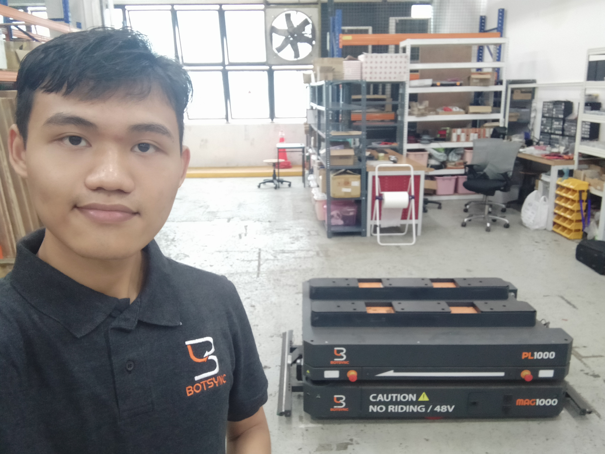
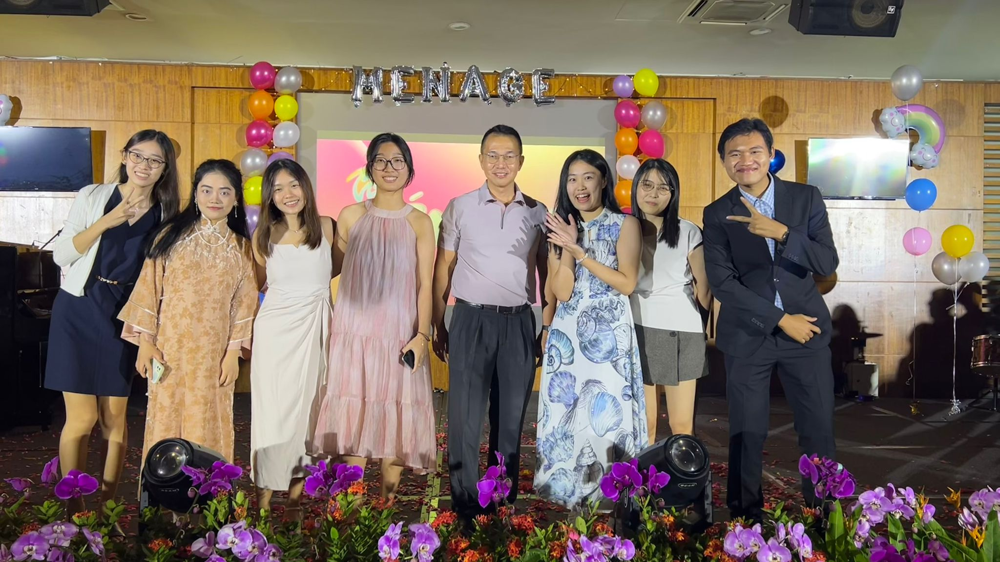

The Big Surprise: Outreach Turns into an All-Out Hackathon
When I signed up for the Google Singapore Data Centre Outreach, I was expecting talks, tours, and networking. The event was held at Mapletree Business City, and the initial atmosphere was buzzing with anticipation. I was assigned to Group 7, where I met a fantastic team of fellow students from NUS, NTU, and SMU, spanning various academic backgrounds, from Bachelor's to Master's degrees.

Group photo at Google Data Center Outreach 2025
After the initial meet-and-greets and some fun Kahoot quizzes about Google's culture and data centers, things took a sharp and thrilling turn. Sitting on our table was not a notebook or a presentation slide, but a fully disassembled server, complete with gloves, cable cutter, crimping tool, and a network cable tester.

Dell EMC PowerEdge R640 Server - Our challenge for the day
My mind started racing. A server? This was my first time physically interacting with enterprise hardware, a world away from the cloud servers I was familiar with through Google Cloud. The realization hit: This wasn't just an outreach; it was a surprise hackathon!
Hands-On Hardware: From Zero to Boot
The official goal was announced: assemble the server and then use it to tackle a series of challenges (Capture the Flag, or CTF) hosted on a local Google website. The moment the clock started, it was a race against time.
Working with my teammates, we quickly assessed who was comfortable with what. Since I had previous experience building PCs at my family's technology company (Technology and Trust (TNT)) back in Myanmar, I took the lead on the physical assembly alongside three others.
We worked in sync: installing the fans, mounting the power supply and storage devices (SSD, memory), and connecting all the necessary cables to the motherboard. It was surprisingly straightforward, leveraging the familiar mechanics of PC building but on a more enterprise scale. Meanwhile, one of my teammates brilliantly handled the network connection, cutting and cleanly crimping the RJ45 network cable to link our assembled server to one of Google's working servers.
Debugging the Difference: Server vs. PC
The physical build was just the warm-up. The real challenge began when we tried to boot the server and connect it to Google's Virtual Linux Machine. This was profoundly different from booting a standard Windows PC which I was more used to.

Troubleshooting and debugging the server
We spent crucial minutes in the Boot Menu and Startup configuration, trying to locate the remote Google server. We were debugging settings, double-checking connections, and battling the unfamiliar server BIOS environment. At one point, we realized a network cable was plugged into the wrong port, but even after fixing that, we still couldn't connect.
This is where the true value of teamwork shone. We simultaneously leveraged online resources like Stack Overflow and, crucially, received invaluable tips and gentle guidance from our team's dedicated Google Developer supervisor. After persistent troubleshooting, we finally managed to establish a connection and boot into the virtual Linux environment. The challenges were officially open!

Working together to solve the CTF challenges
The Power of AI and Teamwork in CTF
The challenges primarily involved running various Linux commands to gather 'flags' which are pieces of hidden information about the server's specifications, network configuration, and operating system.
We quickly ran into a significant hurdle: the Linux installation was barebones. Many familiar tool libraries were missing and ironically given that we were at Google (especially in a Hackathon), we realized the internal network wasn't connected to the external internet, preventing us from downloading packages.
This pushed our troubleshooting into high gear, transforming the experience into an exciting, real-time competition of resourcefulness:
- Online Resourcefulness: We turned to our phones and tablets, aggressively Googling obscure, built-in Linux commands to find the necessary server details.
- AI-Assisted Debugging: We were one of the teams that immediately utilized AI tools like Gemini, Claude, and ChatGPT to rapidly find and refine the correct native commands. It became a human-AI troubleshooting loop, giving us a vital edge.

Snapshot of the team after completing the challenges!
We tackled each challenge, one difficult command at a time, relying purely on built-in utilities and clever search strategies. With only about 13 minutes left on the clock, we successfully entered the final flag! We crossed the finish line in 4th place, a truly incredible feat given the surprise format and our initial lack of server experience.

Final scoreboard - We finished 4th place!
Lessons Learned: Beyond the Code
The surge of accomplishment I felt with my teammates when we finished was immense. This unexpected hackathon taught me more than just the difference between a cloud server and a physical one.

Our Server and My NameTag - Experience Well Remembered!
The most rewarding takeaways were:
- Communication is Key: Solving both hardware puzzles and obscure Linux problems require constant, clear communication and trust among the team members.
- The Power of Online Resources (and AI): In a high-pressure, resource-limited environment, the ability to rapidly search, synthesize information, and leverage AI for assisted troubleshooting is a critical modern skill.
- Friendships Formed: What started as a standard outreach event ended with great friendships forged under the shared pressure and excitement of an unexpected competition.
The Google Data Centre Outreach turned into a defining experience, reminding me that a "competition" can ultimately be a fun, challenging, and profoundly collaborative learning opportunity. The lessons learned, the experience earned, and the friendships formed are what truly mattered at the end of the day.

Wai Yan Min Ko Ko
Hi there! I am a Computer Engineering student at Nanyang Technological University (NTU) and working part-time as Head of Office Staff Assistant Team @HCIBS. With a keen interest in Robotics, AI & IOT, I am constantly seeking new opportunities to expand my experience. If you have any internship opportunities or just want to connect, feel free to contact me!
More Experiences

Mechatronics & Robotics Intern @ Botsync
6-month internship in robotics operations and deployment at Botsync Pte. Ltd.
Read More →
Head of Office Staff Assistant Team @ HCIBS
Leading administrative services and student welfare at Hwa Chong Institution Boarding School
Read More →
Membership Secretary @ SPISC
Leading the Singapore Polytechnic International Students' Club as Membership Secretary
Read More →